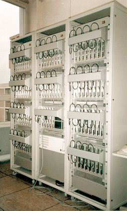

Amoeba is a powerful microkernel-based system that turns a collection of workstations or single-board computers into a transparent distributed system. It has been in use in academia, industry, and government for about 5 years. It runs on the SPARC (Sun4c and Sun4m), the 386/486, 68030, and Sun 3/50 and Sun 3/60.
At the Vrije Universiteit, Amoeba runs on a collection of 80 single-board SPARC computers connected by an Ethernet, forming a powerful processor pool. This equipment is pictured below. It is used for research in distributed and parallel operating systems, runtime systems, languages, and applications.
 The V8-SPARC processor pool at the VU.
A description of Amoeba it can be obtained from:
The full documentation for Amoeba (over 1000 pages) can be downloaded here:
The files are also available via FTP from ftp://ftp.cs.vu.nl/pub/amoeba/manuals .
In addition there are selected papers available.